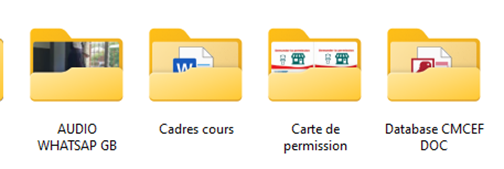
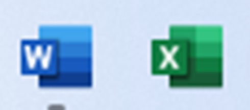
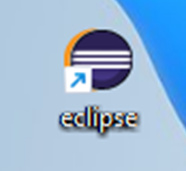
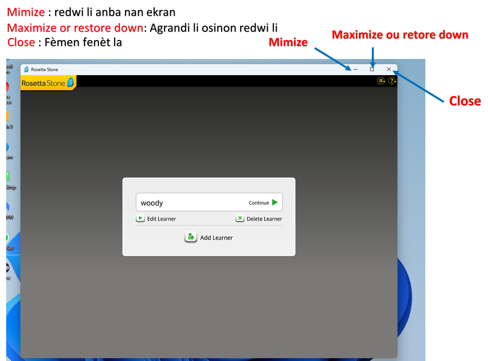
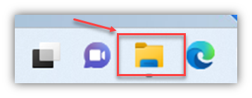
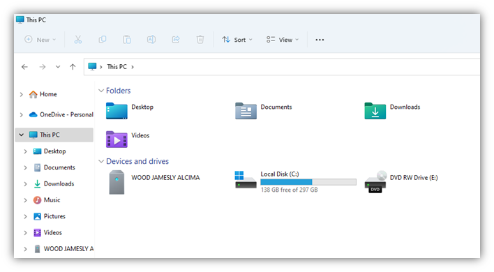

Frè Petyonvil, Ayiti
Frè Petyonvil, Ayiti woodjameslyalcima@gmail.com
woodjameslyalcima@gmail.com
Ouvri 7/7 e 24/24

Pou tout enfomasyon kontakte
+509 4935 7303Ouvri 7/7 e 24/24
Pou tout enfomasyon kontakte
+509 4935 7303Microsoft se konpayi ki kreye windows, konpayi sa te kreye an 1975 e premye sistèm li te kreye a te rele MS-DOS, epi an 1995 li pral chanje an windows 95, aprè li pase nan windows 98, windows 2000, windows XP, Windows Vista, Windows 7, Windows 8, Windows 8.1, Windows 10 epi pou fini nou jwenn windows 11
Windows se yon mo anglè ki vle di fenèt, e wòl yon fenèt se pèmèt ou wè sa kap pase deyò a. Se menm bagay la pou windows ki pèmèt ou wè sa kap pase nan odinatè a e kijan pou ou sèvi avèk li.
Se nan lane 1963 ke Douglas Engelbart te envante premye souri a, An 1979 Jean-Daniel Nicoud te amelyore konsèp la e li te envante premye souri boul la.
Yon souri se yon aparèy ki la pou montre deplasman’w nan yon òdinatè . Konkrètman, souri a pèmèt ou deplase ak yon ti flèch sou ekran an ki rele kisè. Ou Kenbe li nan pla men’w, li pèmèt ou lonje dwèt ou sou sa ki parèt sou ekran an epi chwazi yo lè ou klike. Souri yo ekipe ak yon kaptè deplasman ki se swa optik (limyè), oswa lazè, oswa boul pou pi ansyen an. Epitou gen souri ki pa branche ak fil.
Pou ou itilize yon souri se 2 fason ou ka fè sa, Klike oswa bouje.
yon klik reprezante aksyon lè ou peze yon bouton nan souri a e bouje vle di ou ka deplase souri a mennenl kote ou vle.
Gen 3 kalite klik ou ka fè avèk sourri a :
1) Klik gòch
2) Klik dwat
3) Doub klik
4) Woulèt souri a
Yo rele li Klik gòch oswa senp klik:
Li la sèlman pou seleksyone oswa ouvri yon eleman ki nan meni prensipal la oswa ki nan ba ki gen tach yo.
Klik dwat : Sèlman la pou defile yon meni
Doub klik : Sèlman pou ouvri yon eleman.
Woulèt la se yon eleman nan souri a, ki chita nan mitan 2 bouton yo klik gòch ak dwat. Li pèmèt, ou woule li, pou defile kontni yo soti anwo jouk rive anba, tankou le ou nan yon paj entènèt. Wap jwenn woulèt la nan tout souri ki resan yo.
Premye klavye yo te parèt prèske an menm tan ak premye òdinatè yo nan ane 1970 yo, tèks la te pran pi fò nan done pou yo te trete, klavye yo ranje yon fason diferan selon peyi a..
Klavye a se yon aparèy ki pèmèt ou ekri tèks epi kominike ak òdinatè a. Klavye yo gen plis ki 100 touch . ladan wap jwenn tout lèt ki nan alfabè a, nimewo, aksan ak touch espesyal pou kominike avèk sistèm nan.
Touch Echap la, pou anile pandan yon aksyon ta pral fèt
Touch Espas la: Itilize sèlman pou kreye espas.
Touch Enter: pou ale nan liy ki anbaa lan oswa valide yon bwat dyalòg.
Touch shift: Avèk touch shift la pou ou ka tape plizyè karaktè an majiskil oswa aktive yon lòt fonksyon ( Shift + karaktè mwen bezwen an)
Touch Alt GR la, pou fè konbinezon.
Touch Numlock, pou aktive nimewo yo.
Tout Backspace : pou efase tèks oswa efase yon dosye/dosye nan Windows
Touch Backspace: pou chanje tèks sou bò dwat la oswa chanje selil yo nan Excel
Touch Ctrl ak Alt: pèmèt ou fè rakousi klavye, tankou anrejistre, kite, anile, rechèch.
Touch Windows: pèmèt ou byen vit louvri meni prensipal la.
Touch Navigasyon: Pèmèt ou ale byen vit nan kòmansman oswa nan fen yon dokiman, navige ant paj.
Alt + F4 Fèmen fenèt yon lojisyèl ki ouvri oswa femen windows
Ctrl + S anrejistre yon travay wap fè nan yon lojisyèl (S = Save)
Ctrl + A Chwazi tout, Seleksyone tout: yon tèks, oswa dosye... (A = Tout)
Ctrl + F Jwenn osinon Kòmanse yon rechèch (F = Jwenn)
Ctrl + C Kopi pou Kopye yon eleman (C = Kopi)
Ctrl + X deplase pou deplase yon eleman
Ctrl + V Kole Pou kole yon atik ki te deja kopye oswa deplase
Ctrl + Shift + Del Task Manager ouvri Windows Task Manager pou sispann yon
aplikasyon oswa yon pwoblèm,
Ctrl + Z Defèt dènye aksyon ki te fèt la
Ctrl + Y Rejwenn dènye aksyon ki te fèt la
Sistèm operasyon an (oswa OS) se yon lojisyèl e li gen 2 enterè prensipal:
1.- Fè lyen ant tout eleman yo ki nan òdinatè a (konpozan nan inite santral la, periferik, lojisyèl ak pwogram);
2.-Fè lyen ant itilizatè a (kise ou menm) ak òdinatè a.
Ann fè yon konparezon: ou nan yon fènwa e ou gen yon wout pou ou pase ladan men li fènwa ou pa wè ki kote wap mete pyew epi pandan wap reflechi ou vin sonje ke ou genyen yon flash nan valiz ou. Alò ou pran flash la pou ou ka klere wout la.
Kisa egzanp sa vle di : òdinatè a se wout la e flash la se sistèm operasyon ke wap itilize a se li menm ki pèmèt ou eksplwate wout la pou ou pa mete pyew yon move kote.

Windows: ak diferan vèsyon li yo, sòti nan Windows 95 oswa 98, ke ou ka toujou jwenn sou kèk òdinatè ki fin vye granmoun.

Mac/OS X: sistèm operasyon yo itilize sou òdinatè Apple yo.

Linux: yon ti kras mwens popilè pase de premye yo, sistèm operasyon sa li menm li gratis, sa vle di ou ka modifye li si ou gen konesans avanse nan òdinatè. Linux rekonèt pa logo li yo, yon pengwen.
Limen yon òdinatè se tankou ouvri pòt yon kay. Pou jwenn aksè nan biwo ou a, gen yon lòt etap ankò: pou louvri pòt nan chanm ou oswa pòt nan chanm yon lòt moun, ki pafwa fèmen mande yon kle.
Pòt sa a reprezante yon sesyon itilizatè sou òdinatè a: li pèmèt ou louvri espas kote ou pral travay la. li sekirize avèk yon modpas, w ap bezwen konnen modpas sa pou w ka konekte.
Sou menm òdinatè sa, ka gen plizyè sesyon diferan: pa egzanp, yon òdinatè ki pou yon fanmi ka ekipe ak sesyon pou chak manm nan fanmi an.
Nou pral wè pita nan kou a ki jan yo fèmen sesyon ou a fèmen òdinatè a oswa chanje itilizatè.
Biwo Windows lan se baz sistèm lan, se li ki se kote w ap travay la. Se sou li ke tout dokiman ak lojisyèl yo jeneralman pral lanse(ouvri).
Li pèmèt ou gen aksè rapid nan lojisyèl ki enstale sou òdinatè a: mesaj, tretman tèks, jwè mizik, elatriye. Li lanse lè w klike sou bouton Windows ki anba a gòch ekran an.
Ba ki afiche travay yo a se nan pati anba ekran an li ye epi li pran tout lajè li ki anba e li divize an plizyè zòn.
1.-Bouton demare, ki pèmèt aksè nan meni meni prensipal la
2.-Search ak Cortana (sèlman depi sou Windows 10)
3.-View travay la, bouton ki montre yon apèsi sou tout pwogram ki ouvè yo (depi Windows 10)
4.-Zòn aplikasyon an, ki pèmèt ou mete rakousi lojisyèl pi renmen ou. Chak lojisyèl ki louvri gen icon korespondan li yo ankadre.
5.-Zòn notifikasyon ki montre tan an ak kèk pwogram ki kouri pou kont you antivirus, mizajou, elatriye.
6.-Bouton pou kache tout fenèt yo an menm tan epi montre Desktop la.
Yon ikon se yon imaj ansanm avèk yon ti tèks.
Gen 4 kalite ikon: dosye, fishye, lojisyèl, ak rakousi pou pwogram yo. ou dwe double klike sou ikòn pou louvri yon katab oswa lanse yon lojisyèl.
1.Fishye
Yon fishye se yon done ke mwen anrejistre sou òdinatè a. Li ka reprezante yon mizik, yon fim, yon dokiman tèks, yon tablo.
2.Dosye
Yon dosye gen imaj yon katab jòn ki reprezantel e li gen egzakteman menm fonksyon an tankou nan lavi reyèl, wòl li se pou ranje ak sere enfòmasyon.
Egzanp : Videyo , mizik, dokiman, paj wèb
3.Lojisyèl
Lojisyèl la se yon pwogram ki pote yon karakteristik anplis nan òdinatè a. Lojisyèl yo enstale sou òdinatè a avèk yon disk (CD, DVD), yon kle USB oswa lè w telechaje li sou Entènèt la. Gen lojisyèl ki gratis e gen lòt fòk ou peye pou yo.
4.Rakousi
Yon rakousi se chemen pi kout ki pèmèt ou gen aksè rapid nan lojisyèl oswa yon kote sou òdinatè a. Imaj rakousi a toujou genyen yon ti flèch ladan.
Yon fenèt se yon bwat ki gen fòm yon rektang, e li jwe menm wòl ak nan lavi reyèl, ki se pèmèt ou wè sa ka ki ap pase nan yon dosye oswa nan yon lojisyel pou ou ka konnen kisa ou ka fè avèk lojisyèl sa. Ou ka deplase li oswa chanje gwosè li.

Dosye pèsonèl sou Windows gen menm non ak kont itilizatè ou an epi li itilize pou kenbe tout fichye pèsonèl ou yo: mizik, fim, foto, lèt, elatriye. Li aksesib nan meni demare a epi tou ou ka klike sou File Explorer a nan pati anba ekran an ki nan ba ki afiche travay yo.


Kòman pou pou kreye yon Dosye
Pou kreye yon dosye se yon bagay ki trè fasil :
1) Wap fè yon klik dwa nan yon espas vid
2) Wap pase souri a sou New epi wap chwazi Folder
3) Wap tape non wap bay dosye a epi ou peze enter
Kòman pou pou chanje non yon Dosye
Pou chanje non yon dosye :
1) Wap fè yon klik dwa sou dosye a
2) Wap pase souri a sou Rename
3) Wap tape non wap bay dosye a epi ou peze enter
Kòman pou pou kopye yon Dosye
Pou kopye yon dosye:
1) Wap fè yon klik dwa sou dosye a
2) Wap klike sou a sou copy
3) Wap chwazi kote wap kopye li a
4) wap fè paste pou depoze li
Kòman pou pou deplase yon Dosye
Pou ou deplase yon dosye :
1) Wap fè yon klik dwa sou dosye a
2) Wap klike sou a sou Cut
3) Wap chwazi kote wap kopye li a
4) Wap fè yon klik dwa kote a epi wap klike sou paste
Kòman pou pou efase yon Dosye
Pou ou efase yon dosye :
1) Wap fè yon klik dwa sou dosye a
2) Wap klike sou a sou delete
3) Ou prale nan Recycle bin nan pouw ka wè dosye ou sot efase a
Kòman pou ou rekipere yon Dosye ki te efase
Pou ou rekipere yon dosye :
1) Wap ouvri Recycle bin nan
2) Wap fè yon klik dwa sou dosye ou vle rekipre a
3) Wap chwazi Restore epi dosye a ap tou retounen kote li te ye deja a.
NB : Pou efase li nèt fok ou efase li nan poubèl la tou.
Kòman pou ou ouvri yon Djomp(kle USB)
Pou ou ouvri li :
1) Wap ouvri Fishye ekploratè a kise File Explorer
2) Ou prale nan This pc
3) Wap fè Doub klik sou non Djonp lan.
NB : Pou ou fè kopi, deplase, efase, rekipere, kreye yon dosye osinon yon fishye sou yon djonp se toujou menm bagay la map fè ke lè mwen tap fè yo dirèkteman sou òdinatè a sèlman map jis chwazi djonp lan .
Pou mwen chanje imaj background nan
1.- Map fe yon klik dwa nan yon espas vid sou biwo a
2.- Map chwazi personalize
3.- Map klike sou imaj map chwazi a

Mwen se yon enfòmatisyen, pwofesè, antreprenè.